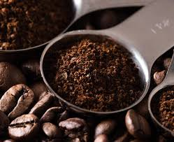

Organic Coffee in Karnataka
Karnataka is the largest producer of coffee in India, contributing about 70% of the total coffee production. The state is renowned for its high-quality organic coffee, grown primarily in the Kodagu (Coorg), Chikmagalur, and Hassan regions.
Coffee Varieties
The two main varieties of coffee grown in Karnataka are Arabica and Robusta. Arabica is known for its smooth, mild flavor, while Robusta has a stronger, more bitter taste and is often used in espresso blends.
Organic Coffee Practices
Farmers use sustainable practices, avoiding synthetic fertilizers and pesticides, and rely on natural methods for pest control and soil health. Karnataka's coffee-growing regions have ideal conditions for organic cultivation—rich soil, high rainfall, and altitudes between 1,000–1,500 meters.
Organic Spices in Karnataka
Karnataka is a major hub for organic spices like black pepper, cardamom, turmeric, and ginger, especially in the Western Ghats.
Black Pepper
- Regions: Kodagu and Chikmagalur districts
- Climate: Warm, humid weather and volcanic soil ideal for cultivation
- Organic Shift: Increasingly grown without chemical fertilizers or pesticides
Cardamom
- Regions: Kodagu and Chikmagalur
- Types: Green cardamom (more in demand), and black cardamom
- Benefits: Grown under forest canopy, supporting ecosystems
Other Spices
- Turmeric: Cultivated in Belagavi and Raichur; valued for medicinal use
- Ginger: Produced in Coorg and Chikmagalur; rising demand for organic ginger
Sustainability and Organic Farming
Karnataka is actively promoting organic farming through state programs and farmer cooperatives.
- Agroforestry: Combining trees with crops like coffee and spices for biodiversity
- Farmer Cooperatives: Help with certification, training, and market access
- Export Potential: High demand in Europe, North America, and the Middle East
Karnataka’s organic coffee and spice cultivation plays a vital role in sustainable agriculture and strengthens India's global trade presence.
← Back to Map